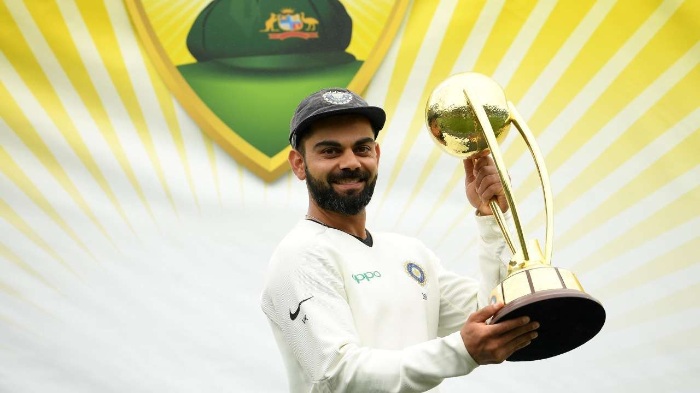

Virat Kohli
This man is known as the Run Machine
Here's a time line of Virat Kohli's life:
- April 2007- Kohli made his T20 debut and finished as the highest run-getter for his team in the Inter-State T20 Championship with 179 runs at an average of 35.80.
- September 2008- Kohli played in Nissar Trophy against SNGPL (winners of Quaid-i-Azam Trophy from Pakistan) and top-scored for Delhi in both innings, with 52 and 197.
- July 2006: Kohli was selected in the India Under-19 squad on its tour of England. August 2008: Kohli was selected for inclusion in the ODl squad for the tour of Sri Lanka and the Champions Trophy in Pakistan.
- 18 August 2008: Kohli made his international debut at the age of 19 in the first ODI.
- December 2008: Kohli was awarded a Grade D contract by the Board of Control for Cricket in India (BCCI) as part of the annual contract list for the Indian national team.
- July–August 2009: Kohli was selected in the four-team Emerging Players Tournament, held in Australia..
- January 2010: Kohli's success on the field belies the stereotype of him as a brash and arrogant player." Dhoni went on to say that "To us, he comes as a 'humble guy'. He might come across different to the world."
- June–July 2011: Kohli was one of three uncapped players in the Test squad.[86] Kohli made his Test debut at Kingston in the first match of the Test series that followed June 2013: Kohli featured in the ICC Champions Trophy in England which India won,Kohli was also named as part of the 'Team of the Tournament' by the ICC.
- July 2013: Many senior players including Dhoni were rested for the five-match ODI tour of Zimbabwe,Kohli was therefore appointed as captain for an entire series. 2017: Kohli got double centuries in the next two Test series against England and Banglades.
- Fastest Indian to reach 1000, 5000, 6000, 7000, 8000, 9000, and 10,000 runs in ODIs
- Fastest Indian and second fastest in the world to reach 10, 15, 20, and 25 centuries in ODIs
- The only batsman in history to average more than 50 in Tests, ODIs, and T20Is simultaneously
- Fastest in the world to reach 15,000 international runs
- Fastest batsman to score 17,000 runs in international cricket (363 innings)
- Virat Kohli becomes the first Indian cricketer to cross 10,000 T20 runs.
- Sir Garfield Sobers Trophy (ICC Cricketer of the Year): 2017, 2018
- ICC ODI Player of the Year: 2012, 2017
- ICC Test Team of the Year: 2017 (captain)
- Padma Shri: 2017
- Arjuna Award: 2013
- Rajiv Gandhi Khel Ratna: 2018
- Sir Garfield Sobers Award for ICC Men's Cricketer of the Decade(2010-2020)
Milestones reached by Virat Kohli
Awards Received by Virat Kohli
"To Become A Good Player, You Need Talent. To Become A Great Player You Need An Attitude Like Kohli."
-- Sunil Gavaskar